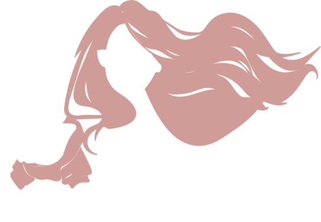

Hi, I am Giang, a UX/UI Designer
I craft design experiences for people.
A creative who is passionate about sustainability and improving the life of others through design. I care about the details and bring a creative problem-solving approach to product design.
